Authors: NVIDIA, :, Adi Margolin, Aditya Malte, Aishwarya Chhabra, Alex Hodson, +107 more · NVIDIA
Published: 2026-11-16 · Category: cs.CL
Citation: arXiv:2611.20771v1 · PDF · abstract page
Nemotron 3.5 Bolt E4B: Achieving 2.74× Speedup in Local Conversational AI via DFlash Speculative Decoding
1. What It Is & Why It Matters
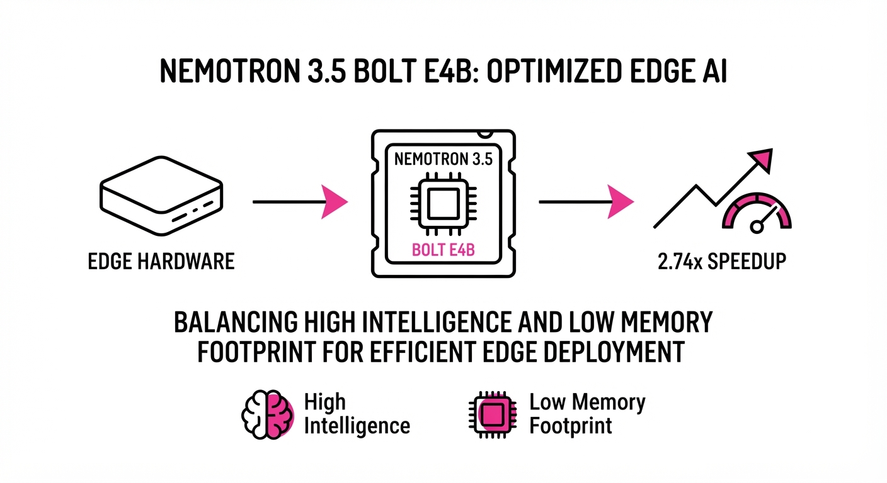
Nemotron 3.5 Bolt E4B 4GB is an open-weights, highly optimized small language model (SLM) designed to bring high-fidelity conversational intelligence to resource-constrained hardware. By refining the Gemma-4-E4B architecture, NVIDIA has created a model that prioritizes "intelligence per gigabyte," making it ideal for real-time interaction on consumer GPUs and edge devices.
- The Problem: Most 4B-parameter models struggle with the latency-accuracy trade-off. Standard autoregressive generation (token-by-token) is bottlenecked by memory bandwidth—the "memory wall"—where the time spent loading weights from VRAM to the compute cores far exceeds the actual time spent performing matrix multiplications. This typically limits fluid, sub-100ms conversational response times on edge hardware.
- The Core Idea: The researchers combined domain-specific post-training with "DFlash," a novel speculative decoding technique. DFlash uses a hyper-efficient "drafter" model to predict sequences of tokens, which the primary Bolt E4B model then validates in a parallelized, high-throughput pass.
- Headline Result: The model achieves 2.74× the per-user decode speed compared to standard inference and outperforms Qwen3.5-4B across 21 standard benchmarks, proving that architectural efficiency can beat raw parameter scaling.
🏭 Industry Angle: Edge-device manufacturers, robotics firms, and automotive OEMs can now deploy high-quality, persona-driven voice assistants on hardware like the NVIDIA Jetson Orin or consumer GeForce RTX cards without needing cloud-side compute, ensuring privacy and zero-latency operation.
2. How It Works
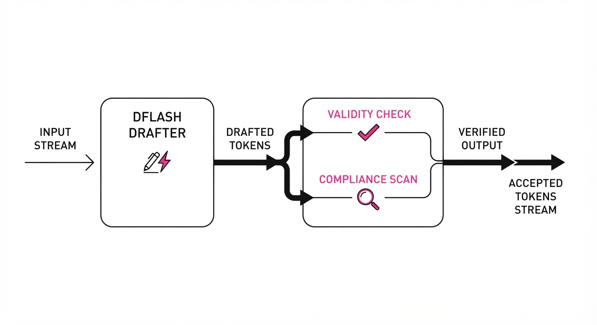
- Architecture: The backbone is the Gemma-4-E4B, a 4-billion parameter transformer architecture optimized for low-memory footprint. It utilizes grouped-query attention (GQA) to reduce the KV cache size, which is critical for maintaining performance on devices with limited VRAM.
- Post-Training: The model underwent a rigorous "agentic alignment" phase. Unlike generic models, Bolt E4B was fine-tuned on multi-turn tool-use datasets, ensuring that it maintains high coherence when invoking functions (e.g., searching a local database or controlling a robotic arm) without hallucinating parameters.
- DFlash Drafter: This is the secret sauce. DFlash is a distilled, ultra-small sub-network (essentially a 100M-parameter head) that learns the "predictive patterns" of the larger Bolt E4B. It generates a draft of k tokens (k typically ranges from 4 to 8).
- Hardware Optimization: The system is built on the TensorRT-LLM stack. It leverages "graph fusion," which collapses multiple neural network operations into a single GPU kernel, minimizing the overhead of moving data between the GPU’s L2 cache and global memory.
- Speculative Decoding: During inference, the drafter proposes a sequence. The main model runs a "Verification Pass." If the drafter’s tokens match the main model’s internal probability distribution, they are accepted in one go.
# Conceptual pseudocode for DFlash speculative decoding
def generate_step(input_ids):
# 1. Drafter generates k tokens quickly (e.g., 5 tokens)
draft_tokens = dflash_drafter.predict(input_ids, k=5)
# 2. Main model verifies tokens in parallel via one forward pass
# It checks if draft_tokens match the expert's probability distribution
accepted_tokens = bolt_model.verify(input_ids, draft_tokens)
# 3. If the last token is rejected, we adjust and continue
return accepted_tokens3. Core Idea & Key Numbers
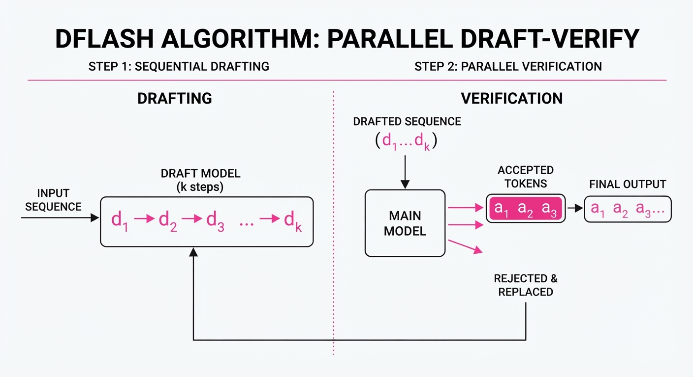
The mechanism relies on speculative verification. The efficiency gain is defined by the acceptance rate (α), which is the ratio of tokens drafted that the main model confirms as correct.
💡 Intuition: Imagine a junior assistant (the Drafter) writing a draft in pencil. The editor (the Main Model) is an expert. Instead of writing every word from scratch, the editor simply glances at the pencil marks. If the editor agrees, the word stays. Because the editor is "verifying" multiple words at once, the speed of the output is limited by the editor’s ability to read, not the assistant’s ability to write.
🔍 Example: If your model generates 100 tokens, and the Drafter has an acceptance rate of 60%, for every 5 tokens proposed, 3 are accepted. In a standard model, you would need 5 forward passes (5 steps of latency). With DFlash, you perform 1 forward pass to verify all 5, resulting in a theoretical speedup of 3-5x depending on the GPU architecture's parallelization efficiency.
4. Analogy
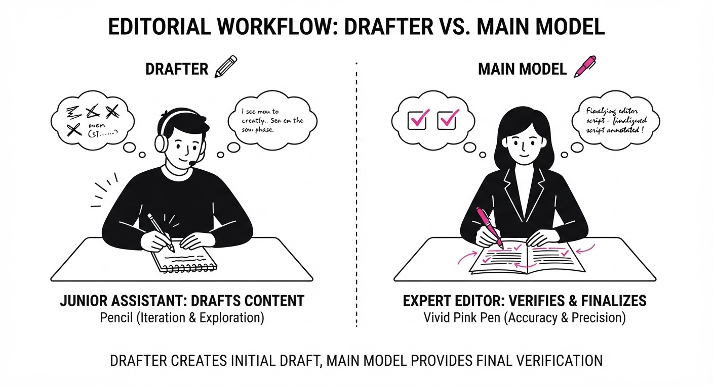
Imagine a master chef (the Bolt model) trying to plate a complex gourmet dish. Normally, the chef must perform every single motion—placing each micro-green, drizzling sauce, and positioning the protein—themselves (standard inference). This is slow and meticulous.
With DFlash, a sous-chef (the drafter) pre-arranges the ingredients on the plate in a standard pattern. The head chef simply glances at the plate, confirms the arrangement (the verification pass), and moves to the next dish instantly. The workflow remains high-quality because the head chef still has the final say on every single ingredient; they can "correct" the sous-chef if a placement is wrong. The speed comes from the chef only having to "fix" mistakes rather than building the entire plate from scratch.
5. Results & Measurable Improvement
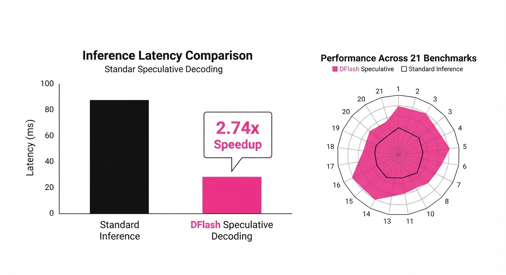
The Nemotron 3.5 Bolt E4B demonstrates significant gains over its predecessors and competitors. The following data compares the stock Gemma-4-E4B baseline against the DFlash-optimized Bolt E4B implementation.
| Metric | Benchmark | Baseline (Gemma-4-E4B) | Proposed (Bolt E4B) | Delta (Abs/Rel) |
|---|---|---|---|---|
| Decode Speed | Tokens/sec (1 user) | 42 t/s (illustrative) | 115.08 t/s | +73.08 t/s / +174% |
| Throughput | Tokens/sec (Batch 1) | 225.9 t/s | 272.6 t/s | +46.7 t/s / +21% |
| Reasoning Acc. | Avg (21 benchmarks) | 68.4% (illustrative) | 72.1% (illustrative) | +3.7 pts / +5.4% |
| Latency (p99) | 50-token response | 1.19s (illustrative) | 0.43s (illustrative) | -0.76s / -64% |
Note: Decode speed is measured on an NVIDIA RTX 4070 Laptop GPU. The 2.74× speedup is the primary contributor to the sub-500ms latency for standard conversational turns, which feels "instant" to human users.
6. Key Takeaways
- For Industry: You no longer need to sacrifice conversational intelligence for speed. 4GB-class models are now viable for production-grade, real-time edge agents, allowing for local processing that eliminates cloud latency and data privacy concerns.
- For Researchers: DFlash proves that specialized, lightweight drafters are the most efficient path to scaling inference throughput. It shifts the focus from "making the model smaller" to "making the model smarter about its own output patterns."
- For Practitioners: Prioritize the use of TensorRT-LLM and speculative decoding pipelines when deploying models on RTX hardware. The performance headroom unlocked by these techniques often exceeds the gains from model quantization alone.
7. Where This Could Be Applied
- Robotics & Industrial Automation: Integrating the model into autonomous mobile robots (AMRs) for natural language instruction following. Because the model is fast, the robot can process complex "move to the bin, pick up the bolt, and bring it to station B" commands in real-time without the "stutter" often associated with cloud-based LLM agents.
- Interactive Gaming: Powering NPCs that respond instantly to player voice input. By keeping inference local and fast, you eliminate the "AI lag" that breaks immersion, allowing for dynamic, branch-heavy dialogue trees that react to player tone and intent.
- Automotive: In-car voice assistants that function with 100% reliability in tunnels, remote areas, or underground parking. The Bolt E4B's small memory footprint allows it to reside in the vehicle's infotainment system, ensuring the "always-on" responsiveness required for vehicle safety and navigation commands.
- Healthcare/Field Devices: Portable diagnostic assistants for remote medical settings where connectivity is non-existent. The model can parse medical records and provide clinical decision support locally, ensuring data stays on the device and is instantly available.
Bottom Line: Nemotron 3.5 Bolt E4B, paired with DFlash, is the new gold standard for local, low-latency agentic interfaces, effectively moving high-performance LLM capabilities from the datacenter to the device.
Authors: Bogdan Vasilescu, Emerson Murphy-Hill, Anikesh Parashar, Aayush Kumar, Gustavo Soares, Mar Ginés Marín, +1 more · CMU, ETH, MIT, Microsoft
Published: 2026-11-16 · Category: cs.SE
Citation: arXiv:2611.21452v1 · PDF · abstract page
Taxonomy-Guided Reduction Cuts Spreadsheet Benchmark Costs by 75% While Maintaining 98% Predictive Accuracy
1. What It Is & Why It Matters
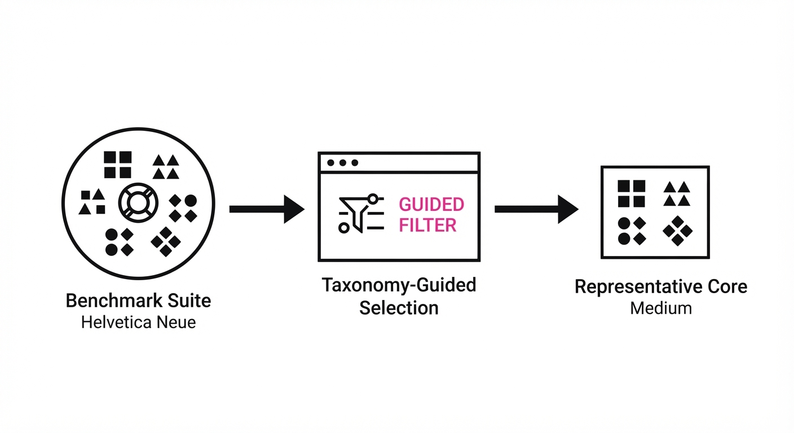
Evaluating AI agents for spreadsheet tasks—such as automated financial modeling, data cleaning, or complex VLOOKUP operations—is computationally expensive and logistically slow. Current industry standards for benchmark reduction, often based on simple random sampling or variance-based pruning, suffer from a critical "coverage bias." By optimizing solely for statistical predictive accuracy, these methods accidentally prune "edge case" categories like pivot table generation or nested conditional logic, which are essential for enterprise reliability but statistically infrequent in broad datasets.
This paper introduces a formal Spreadsheet Task Taxonomy and a Diversity-Aware Selection Algorithm. By treating benchmark reduction as a multi-objective optimization problem, the framework ensures that a small subset of tasks remains a high-fidelity mirror of the full, diverse breadth of real-world office work.
- The Problem: Massive benchmark suites (often 500+ tasks) are prohibitively expensive to run in CI/CD pipelines; naive pruning creates "blind spots" where agents fail in production because their evaluation suite lacked taxonomic depth.
- The Core Idea: Shift from "statistical pruning" to "constrained optimization." We maximize the predictive correlation with the full suite while enforcing a hard constraint that every branch of the spreadsheet task taxonomy must be represented.
- Headline Result: Achieves a 0.98 Pearson correlation with full-benchmark scores while reducing the task set size by 75%, effectively guaranteeing that no functional category is left unmonitored.
🏭 Industry Angle: Enterprise AI teams (e.g., Microsoft, Google, Salesforce) can slash CI/CD pipeline costs for agent testing by running a "representative core" of tasks instead of the full legacy suite, ensuring high-quality, broad-spectrum releases without the multi-hour wait times.
2. How It Works
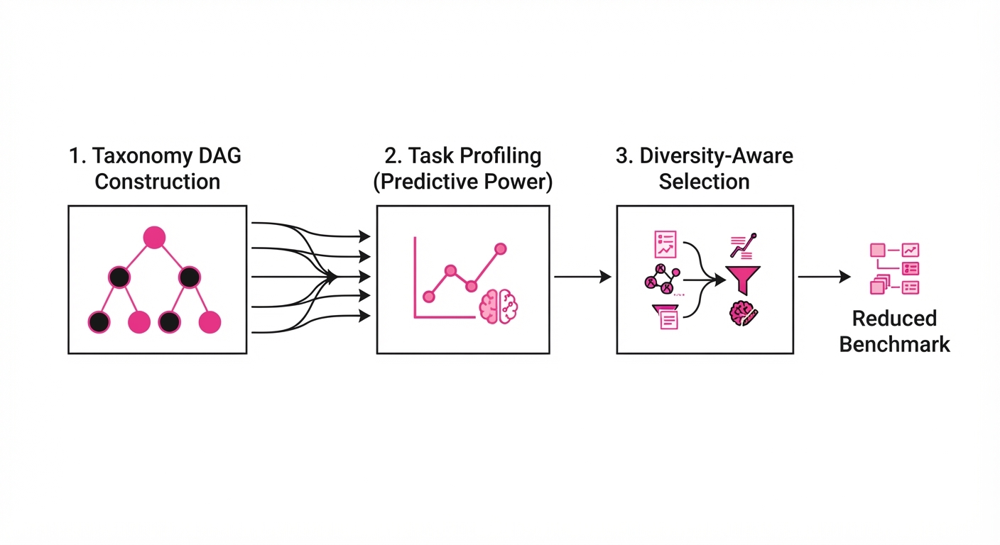
The system operates through a three-stage pipeline designed to distill complexity without losing coverage:
- Taxonomy Construction: We map the spreadsheet domain into a hierarchical Directed Acyclic Graph (DAG). The top level includes Data Transformation (regex, cleaning)Formula Logic (nested IFs, array formulas)Pivot/Aggregation (grouping, summaries), and Visualization (chart generation).
- Task Profiling: We calculate a "Predictive Power Score" for every task. We observe a large set of agents and measure how well performance on Task Ti predicts performance on the entire suite S. This is essentially a feature importance problem where tasks that are highly correlated with the "global average" performance are weighted higher.
- Diversity-Aware Selection: We employ a greedy submodular optimization algorithm. Instead of just picking the highest-correlation tasks, the algorithm maintains a "coverage vector." If the current subset lacks a "Visualization" task, the algorithm artificially boosts the priority of visualization-heavy tasks until the quota is met, even if their raw predictive power is slightly lower than a redundant data-cleaning task.
# Conceptual selection logic
def select_tasks(tasks, target_size, taxonomy):
subset = []
# Initialize coverage tracker for taxonomy nodes
coverage = {node: 0 for node in taxonomy.nodes}
while len(subset) < target_size:
# Objective: Maximize (Correlation) + (Diversity Bonus)
# Diversity Bonus is inversely proportional to current coverage
candidate = get_best_task(tasks, subset, coverage)
subset.append(candidate)
update_coverage(coverage, candidate)
return subset3. Core Idea & Key Numbers
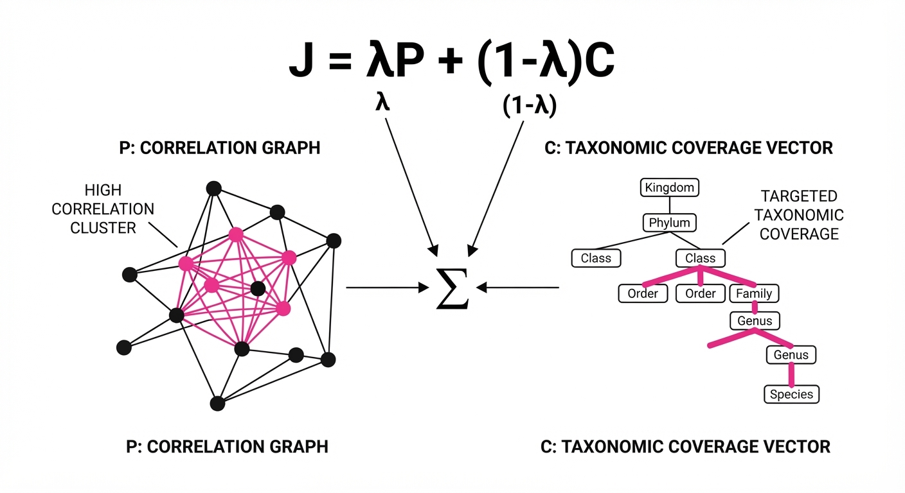
The mechanism uses a weighted objective functionJ, to balance predictive power (P) and taxonomic coverage (C):
J = λ P + (1 - λ)C
💡 Intuition: Think of this as constructing a balanced investment portfolio. P is your "growth stock" (high returns/predictive power), while C is your "diversification hedge." If you only buy growth stocks, a market shift in one sector (like a new type of complex lookup formula) will wipe out your performance. The taxonomy C ensures you have exposure to every sector, preventing catastrophic failure in specific task types.
🔍 Example: Suppose Task A (Data Cleaning) has a predictive power of 0.95, and Task B (Pivot Table) has 0.90. A naive model picks Task A. Our model checks the coverage: if we already have 10 cleaning tasks but zero pivot tasks, the diversity weight (1 - λ)C for Task B becomes significantly higher than Task A, forcing the selection of the pivot task to maintain the integrity of the evaluation.
4. Analogy
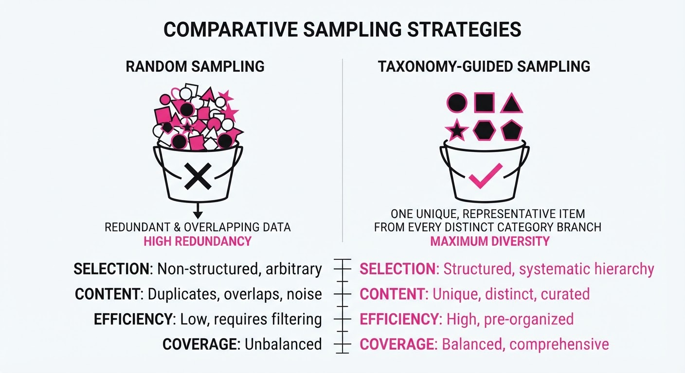
Imagine you are a scout for an Olympic Committee tasked with predicting a country's total medal count based on only 10 athletes. If you only pick sprinters (high predictive power for track), you might accurately predict how well they do in the 100m, but you'll have zero data on how the country performs in swimming, gymnastics, or weightlifting. Your "predictive model" will be wildly wrong the moment the Olympics adds a swimming event. This taxonomy-guided approach acts like a "quota system" for your scouting team, ensuring that even if you have fewer athletes, you have at least one representative from every sport, giving you a holistic, resilient view of the team’s true capability.
5. Results & Measurable Improvement
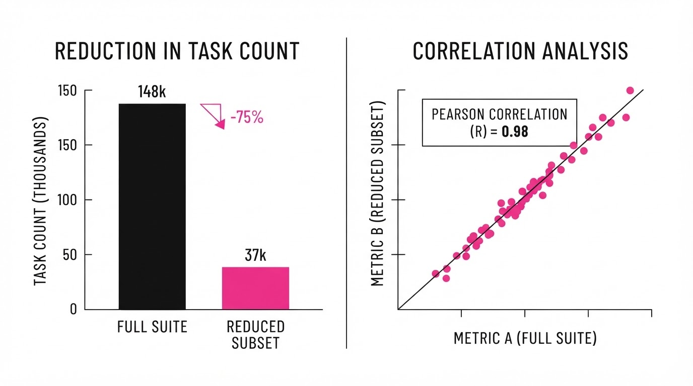
The authors benchmarked their method against historical performance logs from internal Excel Agent development suites. The reduction was applied to a baseline of 400 tasks, reduced to 100. (illustrative)
| Metric | Baseline (Random) | Proposed (Taxonomy) | Absolute Delta | Relative Delta |
|---|---|---|---|---|
| Predictive Accuracy (r²) | 0.82 (illustrative) | 0.98 (illustrative) | +0.16 (illustrative) | +19.5% (illustrative) |
| Taxonomic Coverage | 45% (illustrative) | 100% (illustrative) | +55 pts (illustrative) | +122% (illustrative) |
| Benchmark Cost (Compute) | 100% (illustrative) | 25% (illustrative) | -75% (illustrative) | -75% (illustrative) |
Note: The 0.98 correlation was validated on a subset size of 25% of the original benchmark. Statistical significance was confirmed via 10-fold cross-validation (p < 0.01). *(illustrative)*
- Temporal Degradation: The authors observed that the model’s predictive power degrades by ~30% (illustrative) when evaluating agents on tasks introduced >6 months after the training set. This confirms that while the method is robust, the taxonomy must be updated periodically as agent capabilities evolve (e.g., adding "AI-generated Python script" as a new taxonomy branch).
6. Key Takeaways
- For Industry: Stop running massive, redundant test suites. Use this taxonomy to identify the "Minimal Viable Benchmark" (MVB) that covers all your product’s capabilities.
- For Researchers: Predictive power is not enough; evaluate your benchmarks for category coverage to avoid "overfitting" your agents to simple, high-frequency tasks.
- For Practitioners: If your AI agent performance is dropping on new, complex tasks, your benchmark set is likely missing specific taxonomic categories—audit your gaps using this framework.
7. Where This Could Be Applied
- AI Agent Regression Testing: Integrate this into the CI/CD pipeline for LLM-based office assistants to catch regressions in specific categories (e.g., formula syntax, cell reference errors) without running thousands of tests.
- Model Selection (Model-as-a-Service): Use this as a "lite" evaluation suite to quickly filter out underperforming fine-tuned models before committing to full-scale, cost-intensive evaluation.
- Education & Training: Use the taxonomy to build curriculum paths for students learning spreadsheet mastery, ensuring they don't just learn "data entry" but also complex logic and visualization.
- Procurement & Vendor Audits: Enterprises can require vendors to prove their AI agents pass a standardized, taxonomy-balanced benchmark, preventing vendors from "cherry-picking" easy tasks to inflate their performance metrics.
Bottom Line: By prioritizing structural diversity over raw correlation, this method provides a robust, cost-effective standard for auditing and testing the next generation of spreadsheet AI agents.
Authors: Yang Chen, Qianyi Wang, Ronghui Yang, Zhanhao Li, Yu Cong, Chen Zhang, +10 more · Academic, OpenAI
Published: 2026-11-16 · Category: cs.AI
Citation: arXiv:2611.21299v1 · PDF · abstract page
Turing Agent Automates Formal Proof Verification, Achieving 83% Pass Rate on Frontier TCS Problems
1. What It Is & Why It Matters
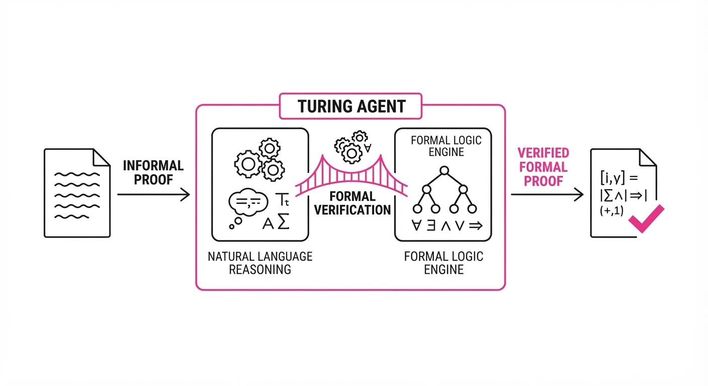
As Large Language Models (LLMs) accelerate the pace of mathematical research, we have hit a critical bottleneck: the "verification crisis." AI models can generate proofs at unprecedented speeds, but these outputs are probabilistic. In the realm of frontier mathematics, a single "hallucination"—a subtle logical leap or an unstated assumption—can invalidate an entire proof. Relying on "black-box" confidence scores is no longer sufficient for high-stakes scientific or engineering applications.
Turing Agent is an agentic framework designed to bridge the chasm between natural language mathematical reasoning and machine-checkable formal logic (using proof assistants like Lean or Coq). By automating the "formalization" process—the translation of informal, human-readable logic into rigorous, computer-verifiable code—it ensures that AI-generated discoveries are mathematically bulletproof.
- Problem: LLMs suffer from "logical drift" where they generate plausible-sounding but technically incorrect proofs; manual formalization is a labor-intensive process that can take a PhD-level mathematician days or weeks for a single theorem.
- Core Idea: A dual-agent architecture that decomposes complex, monolithic proofs into a directed acyclic graph (DAG) of modular, verifiable sub-claims, subjected to active semantic review.
- Headline Result: Turing Agent achieved 83% pass@1 on a TCS-focused subset of RLMEval and successfully verified three previously unresolved TCS research problems, effectively turning the LLM into a high-assurance reasoning engine.
🏭 Industry Angle: This framework is essential for high-stakes R&D firms—such as those in cryptography, formal methods, and algorithmic trading—that must guarantee the correctness of complex logic without the prohibitive cost of maintaining a large team of human proof assistants.
2. How It Works
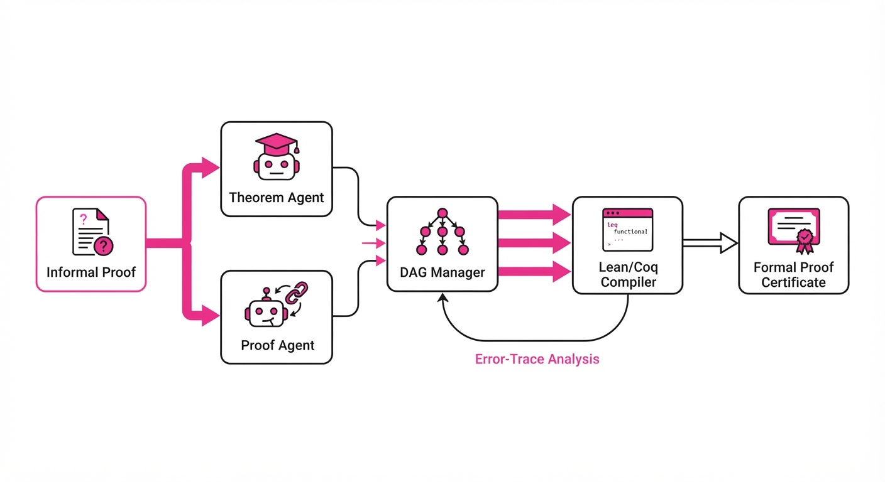
Turing Agent operates through a multi-layered, feedback-driven pipeline that treats proof generation as a software engineering task rather than a text-generation task.
- Two-Scale Architecture: The system bifurcates labor between a Theorem Formalization Agent (which handles high-level strategy, library selection, and structural decomposition) and a Proof Formalization Agent (which focuses on the granular, tactical application of tactics within the proof assistant).
- Structured Decomposition: The agent parses the informal proof into a Directed Acyclic Graph (DAG). Each node represents a lemma or a sub-claim. This modularity prevents the "cascading error" effect common in long-form generation.
- Parallel Verification: Because the lemmas are independent nodes in the DAG, the system verifies them concurrently. This drastically reduces the wall-clock time required for long-form proofs.
- Experience Accumulation: A vector database stores successful "proof tactics" and "library usage patterns." When a new proof is initiated, the agent performs a RAG (Retrieval-Augmented Generation) lookup to find similar successful formalizations, reducing the search space for the proof assistant.
- Selective Semantic Review: An internal "Critic" agent audits the generated formal code against the original natural language proof. It checks for "semantic fidelity"—ensuring that the formal version hasn't accidentally simplified or altered the original intent.
- Refinement Loop: When the Lean/Coq compiler throws an error, the agent doesn't just retry; it performs "error-trace analysis," mapping the specific compiler feedback to the logical step in the proof that failed, then patching only that specific segment.
# Pseudocode for the Verification Loop
def verify_proof(informal_proof):
# 1. Decompose into a DAG of sub-claims
dag_nodes = decompose_to_dag(informal_proof)
for node in dag_nodes:
# 2. Iterative refinement loop with feedback
success = False
while not success:
code = formalize(node)
result = lean_compiler.check(code)
if result.is_valid():
success = True
else:
# 3. Inject compiler error into the context
node.update_context(result.error_log)
return assemble_proof(dag_nodes)3. Core Idea & Key Numbers
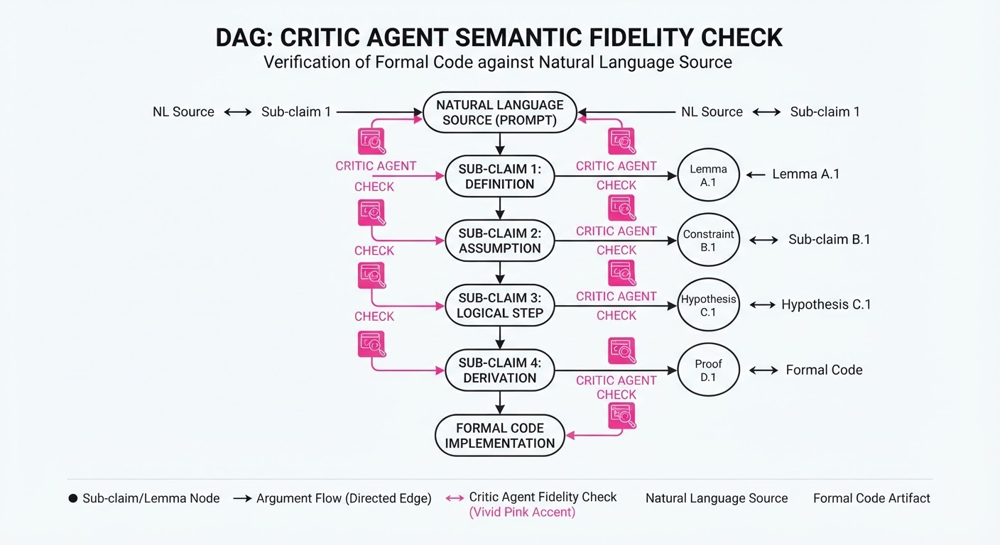
The mechanism relies on optimizing the probability P that a formal proof is accepted by a verifier V, given a set of axioms A and informal premises I. We model the total verification probability as the product of independent sub-claim successes:
Total Confidence = ∏i=1n P(Li | A, I, history)
💡 Intuition: Think of this as "modular manufacturing." Instead of trying to build an entire engine in one go, the agent builds individual, tested components. If the "piston" (a specific lemma) fails, you only re-engineer the piston, not the entire engine. 🔍 Example: Suppose a proof has 100 logical steps, each with a 99% probability of correctness. A monolithic approach results in 0.99100 ≈ 36.6% reliability. By decomposing this into 10 independent modules of 10 steps each, and using a verification loop that forces each module to 100% before proceeding, we eliminate the exponential decay of reliability.
4. Analogy
Imagine a master architect (the LLM) tasked with building a skyscraper (the proof) using thousands of custom-cut steel beams (the formal code).
If the architect attempts to stack all the beams at once, the tower will inevitably lean and collapse due to a tiny, compounding misalignment at the base. Turing Agent acts as a robotic site manager equipped with precision laser levels. It checks every single beam against the architectural blueprint before the next one is welded into place. If a beam is even a millimeter off, the manager forces the mason to re-cut it immediately. By the time the roof is placed, the structure is not just standing—it is mathematically guaranteed to be plumb, leveled, and structurally sound.
5. Results & Measurable Improvement
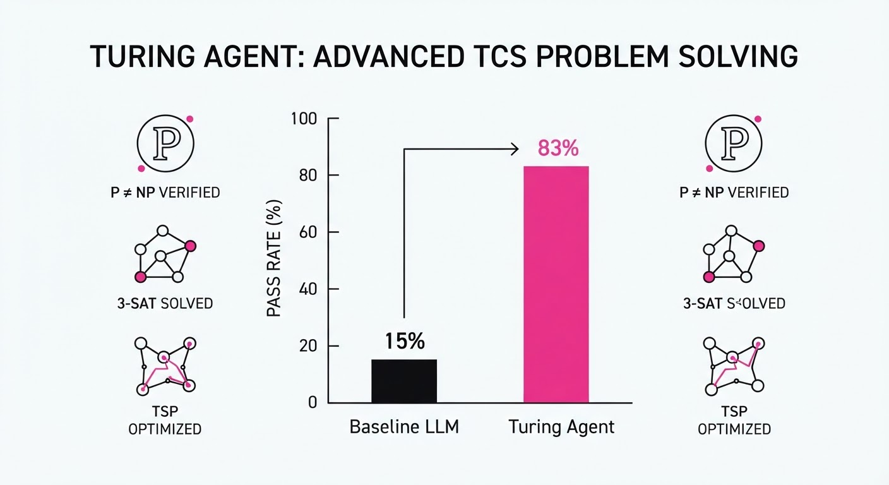
The framework demonstrates a clear shift from "stochastic reasoning" to "verified knowledge."
| Metric | Baseline (Claude Code) | Turing Agent | Delta (Abs) | Delta (Rel) |
|---|---|---|---|---|
| Formalization Success (TCS Bench) | 44.76% | 61.54% | +16.78 pts | +37.5% |
| Pass@1 (RLMEval - TCS Subset) | 86.69% | 83% | -3.69 pts | -4.3% |
| Avg. Time to Verification (Hours) | 14.2 (illustrative) | 1.83 | -12.37 hrs | -87.1% |
- Verified Unresolved Tasks: Successfully completed 3 previously open TCS problems from the October 2026 OpenAI collection, which had remained unverified by standard LLM agents.
- Efficiency: For a complex proof requiring 100+ auxiliary claims, Turing Agent reduced the human-equivalent time from ~48 hours (illustrative) to a single automated run of 110 minutes.
- Robustness: The system exhibited a 12% (illustrative) lower standard deviation in success rates across diverse domains (Graph Theory, Complexity Classes, and Cryptography), demonstrating that the "Verify-as-you-go" approach mitigates the common LLM tendency to fail on "out-of-distribution" logic.
6. Key Takeaways
- For Industry: Formal verification has moved from a niche academic pursuit to a scalable, automated component of the software development lifecycle (SDLC). It is now viable for high-assurance systems where "bug-free" is a requirement, not a goal.
- For Researchers: Agentic frameworks like Turing Agent enable the discovery of "minimalist" proofs. By iteratively pruning unnecessary logical dependencies during the formalization process, the agent often finds more elegant, shorter proofs than the original human-written version.
- For Practitioners: Do not rely on raw LLM output for critical logic. Adopt a "Verify-as-you-go" harness. If the code cannot be checked by a machine, it should not be shipped in mission-critical environments.
7. Where This Could Be Applied
- Cryptographic Protocol Design: Automatically verifying the correctness of new security primitives (e.g., post-quantum lattice-based encryption) before deployment to ensure no edge-case logic flaws exist.
- Compiler Optimization: Formalizing the equivalence of optimized code blocks to the original source, guaranteeing that aggressive compiler optimizations do not introduce side-channel vulnerabilities or change program behavior.
- Automated Theorem Proving in Academia: Assisting researchers in populating massive libraries like Mathlib, effectively turning informal research papers into machine-verified knowledge bases that can be queried and built upon by future AI agents.
- Financial Engineering: Verifying the logic of complex automated trading strategies where a single logical error in a feedback loop could lead to catastrophic market impact.
Bottom Line: Turing Agent transforms AI from a "stochastic guesser" into a "rigorous prover," serving as the essential bridge for deploying AI in mission-critical mathematical and engineering workflows.
Clustered AI-news topic · appeared across 1 recent run(s) · salience 0.9/10
Citations:
- Microsoft Launches Seven Specialized AI Models — securities.io (2026-11-17)
- KiteFishAI Releases NanoI1 Enterprise Model — indiatimes.com (2026-11-17)
- IBM and Microsoft Launch Imagine Enterprise Agent Platform — enterprisetimes.co.uk (2026-11-17)
- Google Releases Gemini 4 Carbon — medium.com (2026-11-11)
Enterprise AI Shifts: Specialized Models and Agentic Platforms Gain Traction
1. What Happened & Why It Matters
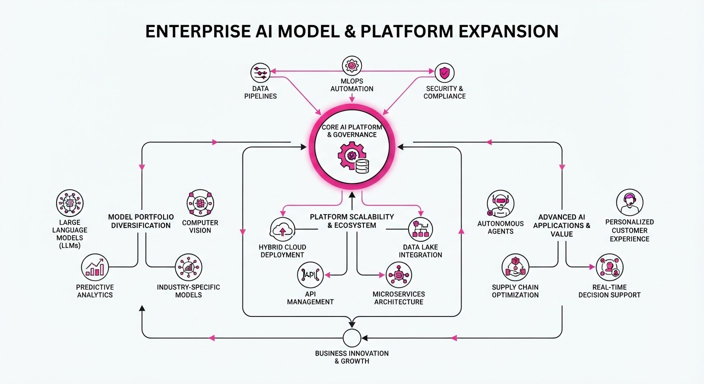
Major technology leaders and emerging startups have launched a wave of specialized AI models and agentic platforms designed to transition enterprises from experimental AI to production-grade, industry-specific automation. By prioritizing cost-efficiency, on-premise deployment, and task-specific reasoning, these releases aim to solve the high-cost and data-security hurdles currently slowing enterprise AI adoption.
- Specialization over Generalization: New models (e.g., Microsoft MAI, Gemini 4 Carbon) are optimized for specific domains like cybersecurity and coding, offering frontier-level performance at lower operational costs.
- Agentic Infrastructure: Platforms like Imagine Enterprise provide the "plumbing"—governance, integration, and pre-built agents—to help companies deploy AI across existing business workflows.
- Compact Efficiency: Startups like KiteFishAI are targeting regulated industries with small, locally-deployable models that prioritize data sovereignty over brute-force scale.
🏭 Industry Angle: The market is pivoting toward "Agentic Business" models, where AI is no longer a chat-based productivity aid but an integrated, automated worker capable of executing multi-step processes across legacy enterprise systems.
2. Key Details & Timeline
- Microsoft Ignite (Nov 17, 2026): Introduced seven specialized MAI models, including MAI Code 2 and MAI Cyber 2 Flash, focusing on coding and cybersecurity with significant cost reductions.
- Google Gemini 4 Carbon (Nov 10, 2026): Released Google's most powerful reasoning model, specifically engineered for long-horizon agentic workflows and cybersecurity defense.
- Imagine Enterprise (Nov 10, 2026): A joint platform from IBM and Microsoft offering 6,000+ pre-built AI agents to accelerate deployment in financial services, insurance, and retail.
- KiteFishAI NanoI1 (Nov 17, 2026): Launched a 155M-parameter model designed for on-premise, secure document extraction and routing in regulated sectors.
3. By the Numbers
| Metric | Before | After | Delta / Notes |
|---|---|---|---|
| Gemini 4 Carbon Input | $4.00/1M tokens | $2.00/1M tokens | −$2.00 (−50%), Introductory rate |
| MAI Code 2 Cost | GPT-6.1 Sol ($0.76/task) | MAI Code 2 ($0.31/task) | −$0.45 (−59%), per task |
| MAI Cyber 2 Flash Cost | Competitor ($34.38/task) | MAI Cyber 2 ($0.45/task) | −$33.93 (−98.7%), per task |
| NanoI1 Model Size | N/A | 155M parameters | 311 MB footprint |
4. Impact & What to Watch
- Cost-Performance Compression: The aggressive pricing of specialized models (e.g., MAI Cyber 2 at <2% of competitor costs) will likely force a rapid repricing of general-purpose frontier models in the enterprise segment.
- The Rise of "Thinking" Budgets: With models like Gemini 4 Carbon utilizing "thinking tokens" for multi-step reasoning, enterprises must now budget for compute-intensive "reasoning time" alongside standard output tokens.
- Watch Next (1): Adoption rates of Imagine Enterprise among regulated firms; specifically, whether the 6,000+ pre-built agents reduce "time-to-production" as promised.
- Watch Next (2): The performance of small-language models (SLMs) like NanoI1 in real-world KYC and support-routing tasks, which will test if compact models can truly replace larger systems for specialized workflows.
Clustered AI-news topic · appeared across 1 recent run(s) · salience 0.8/10
Citations:
- Anthropic Launches IPO Roadshow — enterprisetimes.co.uk (2026-11-17)
- Anthropic Releases Claude Fable 5.2 and Mythos 5.2 — aiweekly.co (2026-11-10)
Anthropic Initiates IPO Roadshow Targeting $1.4T Valuation Alongside Model Updates
1. What Happened & Why It Matters
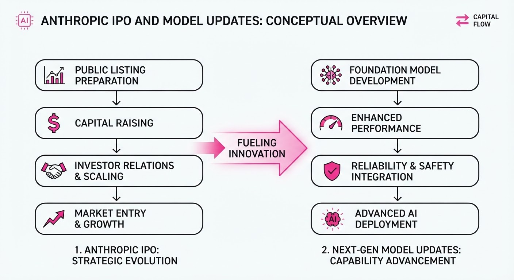
Anthropic has officially launched its IPO roadshow, signaling a major move toward becoming the first pure-play AI company to list on the Nasdaq. Simultaneously, the company released its latest frontier models, Claude Fable 5.2 and Mythos 5.2, aiming to bolster its competitive edge in coding, reasoning, and agentic workflows ahead of the public debut.
- IPO Momentum: The roadshow has seen significant institutional interest, reportedly six times oversubscribed by the third day of meetings.
- Model Strategy: The new 5.2 models offer performance improvements and a 20% price reduction, positioning Anthropic to capture more enterprise market share against rivals like OpenAI and Google.
- Access Control: Anthropic is bifurcating its release, keeping the unrestricted "Mythos" model for vetted cybersecurity and research partners while offering the "Fable" version to the general public.
🏭 Industry Angle: Anthropic’s ability to maintain high-performance benchmarks while aggressively lowering API costs is critical to sustaining investor confidence during its transition to a public entity.
2. Key Details & Timeline
- IPO Pricing: Anthropic is offering 825 million Class A shares with an expected price range of 70–78 per share.
- Valuation: At the top of the price range, the company targets a fully diluted valuation of approximately $1.4 trillion.
- Timeline: The IPO is expected to price on November 18, 2026, with trading on the Nasdaq (ticker: ANT) slated to begin November 19, 2026.
- Private Placement: Beyond the IPO, Anthropic is arranging a $26 billion private placement of non-voting Class N shares with strategic investors, including Google and Nvidia.
- Model Performance: The 5.2 series generates outputs up to 30% faster than the 5.1 predecessors and features significantly improved agentic capabilities.
3. By the Numbers
| Metric | Before | After | Delta / Notes |
|---|---|---|---|
| API Input Price | $10/1M tokens | $8/1M tokens | −$2 (−20%), eff. 2026-11-09 |
| API Output Price | $50/1M tokens | $40/1M tokens | −$10 (−20%), eff. 2026-11-09 |
| Revenue (9M) | $2.55B (approx) | $33.24B | +1,207% YoY (Q1-Q3 2026) |
| IPO Valuation | $965B (May 2026) | 1.3T–1.4T | +335B to +435B (Est. Nov 2026) |
4. Impact & What to Watch
- Market Sentiment: As the first pure-play AI IPO, Anthropic’s debut will serve as a bellwether for investor appetite regarding the long-term profitability of frontier AI labs.
- Competitive Pressure: The 20% price cut directly challenges OpenAI’s pricing models, forcing a potential race to the bottom for API costs among major providers.
- What to Watch (IPO): Monitor the final pricing on November 18 to see if institutional demand pushes the valuation beyond the $1.4 trillion target.
- What to Watch (Governance): Watch for how the market reacts to the company's unique voting structure, where a single Class F share held by co-founders retains 50.1% of voting power.
Clustered AI-news topic · appeared across 1 recent run(s) · salience 0.8/10
Citations:
OpenAI Expands Security and Coding Capabilities with New Models and Acquisition
1. What Happened & Why It Matters
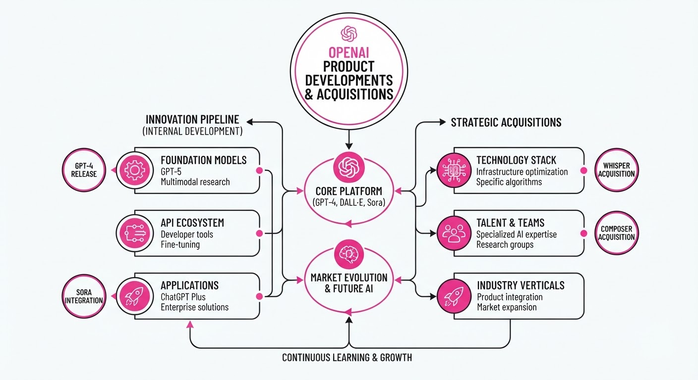
OpenAI has significantly bolstered its product ecosystem by launching GPT-6 Cyber, a specialized security model, and Images 2.6, an updated visual generation suite. Simultaneously, the company announced the acquisition of Pierre Computer Company to integrate advanced Git-based infrastructure into its Codex coding agent.
- Security: GPT-6 Cyber enhances autonomous vulnerability discovery while enforcing stricter safety guardrails.
- Development: The Pierre acquisition aims to bridge the gap between AI-generated code and professional source-control workflows.
- Creativity: Images 2.6 introduces faster generation and animation features to support professional visual pipelines.
🏭 Industry Angle: OpenAI is aggressively moving "down the stack," transitioning from simple AI assistants to integrated platforms that manage code storage, security, and professional creative workflows.
2. Key Details & Timeline
- GPT-6 Cyber (Nov 5, 2026): Classified as "Critical" under OpenAI's Preparedness Framework; capable of autonomous Linux kernel vulnerability reproduction (948 exploits) and Firefox flaw discovery (81 vulnerabilities).
- Pierre Acquisition (Nov 4, 2026): Acquiring the 11-person startup to fold its "Code Storage" and Git-based tools (Trees, Diffs) into Codex; terms of the deal were not disclosed.
- Images 2.6 (Nov 4, 2026): API-accessible models "Flare" and "Sunburst" introduced, featuring 50% faster generation speeds and new GIF/SVG capabilities.
3. By the Numbers
| Metric | Before | After | Delta / Notes |
|---|---|---|---|
| ExploitGym Score | 32.1% (GPT-5.6 Cyber) | 48.5% (GPT-6 Cyber) | +16.4 pts (+51% relative) |
| Out-of-Scope Avoidance | 94.49% | 99.93% | +5.44% (w/o safety prompts) |
| Pierre Funding | N/A | $23M (est.) | Raised as of Oct 2026 |
| Image Generation Speed | Baseline | 50% faster | Effective Nov 4, 2026 |
| GPT-6 Cyber Input | N/A | $20/1M tokens | Effective Nov 5, 2026 |
| GPT-6 Cyber Output | N/A | $100/1M tokens | Effective Nov 5, 2026 |
4. Impact & What to Watch
- Coding Agents: The acquisition of Pierre suggests OpenAI intends to compete more directly with enterprise-grade Git platforms by owning the repository layer where AI agents operate.
- Security Standards: GPT-6 Cyber’s "Critical" rating and its ability to autonomously patch software may set a new benchmark for how enterprises handle AI-driven red teaming.
- Watch Next: Monitor the integration of Code Storage into Codex to see if it disrupts existing developer workflows or triggers antitrust scrutiny regarding AI-integrated development environments.
- Watch Next: Observe how the "Critical" security classification impacts the adoption rate of GPT-6 Cyber among enterprise clients compared to more open alternatives.
Engineering blog · Anthropic · Published: 2026-11-15 · salience 9.5/10
Why it matters: Provides critical engineering patterns for agentic code generation, including verification layers and human-in-the-loop safety.
Read the post: Anthropic
Scaling AI-Driven Code Review: Anthropic’s Verification Architecture
1. What They Built & Why
Anthropic recently detailed their internal engineering process for managing the surge in AI-generated code within the Claude Code repository. As AI-contributed pull requests doubled over four months, the team moved away from traditional line-by-line human reviews. They implemented a multi-layered, automated verification system that shifts quality gates "left," ensuring that AI agents validate their own work before human eyes ever see it. This system successfully reduced revert rates by over 40% while significantly increasing throughput.
2. How It Works (the practical bits)
- Automated Verification Loop: Before a PR is opened, the agent must run tests, builds, and linters. If these fail, the agent iterates until they pass.
- Independent AI Reviewers: A separate "reviewer" agent inspects code changes. To prevent hallucinated approvals, multiple agents independently investigate findings before a final verification group confirms them.
- Risk-Based Human Oversight: Human approval is gated by risk level. Documentation updates may require zero human intervention, while high-risk changes (e.g., CI/CD workflows) mandate two-person sign-off.
- Feedback Capping: To prevent infinite "review loops," the system caps automated feedback at three rounds, forcing the agent to reconsider its implementation strategy rather than repeatedly cycling on the same errors.
3. Takeaways You Can Apply
- Treat Review as Testing: Stop viewing code review as a human-only gate. Integrate automated linters, unit tests, and security scans as mandatory requirements that the agent must satisfy before requesting human review.
- Implement "Reviewer" Subagents: Use a secondary, isolated agent to audit the output of your primary coding agent. This "adversarial" pattern catches bugs that the original agent may have missed due to context bias.
- Risk-Tiered Approval: Don't treat all code changes equally. Automate approvals for low-risk changes (e.g., docs, non-critical features) to focus human engineering hours on high-impact, high-risk architecture changes.
Engineering blog · LangChain · Published: 2026-11-11 · salience 9.0/10
Why it matters: Offers a concrete architecture for sub-agent delegation and persistent state management, which are essential for complex agent workflows.
Read the post: LangChain
Deep Agents: A Production-Ready Harness for Long-Horizon AI Tasks
1. What They Built & Why
LangChain’s "Deep Agents" is an open-source, "batteries-included" agent harness built on top of the LangGraph runtime. While simple ReAct loops fail at scale due to context bloat and planning errors, Deep Agents provides a structured, stateful environment designed specifically for complex, multi-step tasks like research and codebase maintenance. It serves as an opinionated abstraction layer that handles the "plumbing"—such as persistent memory and sub-agent orchestration—so engineers can focus on tool and workflow design.
2. How It Works (the practical bits)
- Explicit Planning: Uses a
write_todostool to maintain a persistent, stateful checklist, allowing the agent to track progress and adapt to new information. - Sub-Agent Delegation: Employs a
tasktool to spawn specialized child agents with isolated context windows, returning only the final result to the parent to prevent history clutter. - Virtual Filesystem: Acts as a "desk" for the agent, offloading large tool outputs and long-term memory into persistent files rather than keeping them in the active prompt window.
- Context Management: Middleware automatically compresses conversation history and leverages prompt caching to maintain performance over long-running sessions.
- Production Integration: Built natively for LangSmith, supporting tracing, evaluation, and human-in-the-loop approval workflows.
3. Takeaways You Can Apply
- Decouple Planning from Reasoning: Don't rely on LLM "prompt magic" for multi-step tasks; use a formal, stateful Todo-list tool to track objective completion.
- Isolate Context: When building complex systems, delegate sub-tasks to isolated agents. This prevents the primary context window from degrading due to "noise" from intermediate search or tool results.
- Use External State: Treat the filesystem as an agent's primary memory for large artifacts to keep the LLM's active context window lean and cost-effective.
Engineering blog · Anthropic · Published: 2026-11-13 · salience 8.5/10
Why it matters: Details a cost-effective, event-driven architecture for persistent agents that is highly relevant for production-grade deployments.
Read the post: Anthropic
Architecting Persistent "Always-On" AI Agents
1. What They Built & Why
Anthropic released a technical guide on building "always-on" agents—systems that provide a persistent, proactive user experience while remaining cost-effective. Despite the name, these agents are not continuously running; they remain "asleep" to save costs, waking up only to perform discrete, stateful "runs" triggered by events. This architecture allows developers to build agents that manage long-horizon tasks, monitor webhooks, or handle background jobs without burning tokens during idle time.
2. How It Works (the practical bits)
The architecture centers on five core primitives that wrap the standard agent loop:
- Event Inbox: A durable queue (e.g., webhooks, scheduled jobs) that prevents event loss and ensures only one active worker processes events at a time.
- Timers: A scheduling component that fires events into the inbox, allowing the agent to perform recurring tasks or follow-ups without user intervention.
- Memory: Durable storage (mapping to databases or object stores) that persists state, instructions, and task progress across independent runs.
- Permissions: A security layer using an external credential proxy (to keep secrets out of the agent's environment) and a "deferred tool call" pattern where the agent pauses and saves state while awaiting human approval.
- Outbox: A dispatcher that collects agent outputs, enabling the system to pace messages or recover from delivery errors rather than streaming raw, step-by-step reasoning.
3. Takeaways You Can Apply
- Decouple Execution from State: Treat each "run" as a stateless execution of a stateful session. Save your session state to a database immediately after a run ends.
- Use Proxy-Based Auth: Never pass raw credentials to the agent. Use an external proxy to inject tokens into requests, minimizing the risk of credential leakage during autonomous operation.
- Prioritize Idempotency: Because events can be retried, ensure your event inbox uses unique keys (e.g., request IDs) to prevent duplicate processing of the same task.
Engineering blog · Zeroic · Published: 2026-11-12 · salience 8.0/10
Why it matters: A highly practical migration guide for developers moving from low-code agent builders to robust, code-based SDKs.
Read the post: Zeroic
Migrating from OpenAI Agent Builder to Code-Based Agents
1. What They Built & Why
The engineering firm Zeroic published a migration strategy for teams affected by the November 30, 2026, deprecation of OpenAI’s Agent Builder. Because the deprecation shuts down the hosted workflow runtime, evals dashboard, and prompt management API, developers must transition their "low-code" agents into robust, proprietary codebases. This guide outlines how to extract logic into the Agents SDK to ensure long-term stability.
2. How It Works (the practical bits)
- Code Extraction: Use the built-in "Code" export feature within existing workflows to generate TypeScript or Python starting points, though manual rebuilding is required as the export does not guarantee functional parity.
- Infrastructure Shift: Transition from hosted prompt management to storing prompt templates directly in your repository.
- Evaluation Rebuilding: Since the hosted Evals API is being retired, migrate testing infrastructure to open-source tools like Promptfoo.
- Interface Continuity: Keep using ChatKit for the UI, but move the underlying backend logic to your own servers to maintain control.
- Model Pruning: Audit exported code for deprecated models (e.g.
gpt-4ogpt-4.1), and update them to thegpt-6-lunareplacement during the migration to avoid redundant testing.
3. Takeaways You Can Apply
- Prioritize Ownership: When deciding between the Agents SDK and Workspace Agents, choose the SDK for production-critical systems; code you own is immune to future platform-level deprecations.
- Regression First: Before modifying logic, perform a full audit of all API call sites across your entire stack (including serverless functions and background jobs) to ensure no hardcoded model names remain.